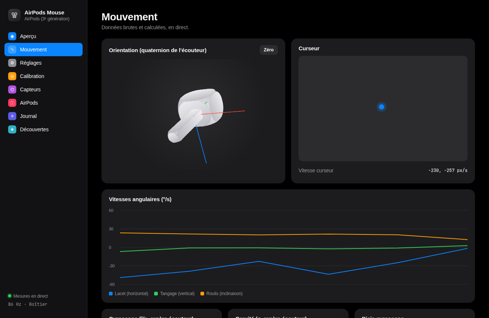
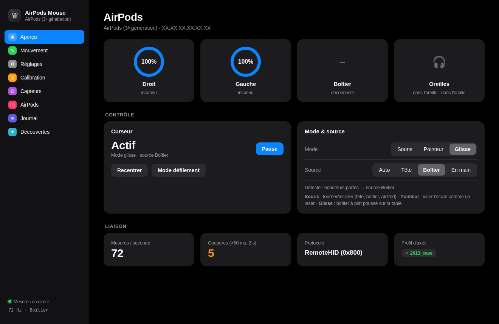
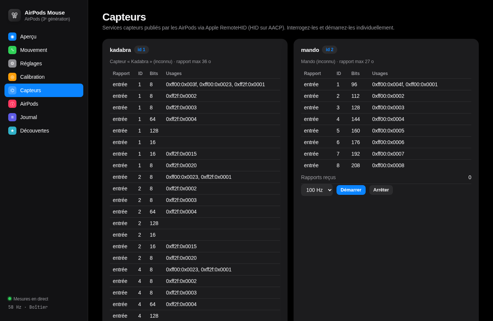
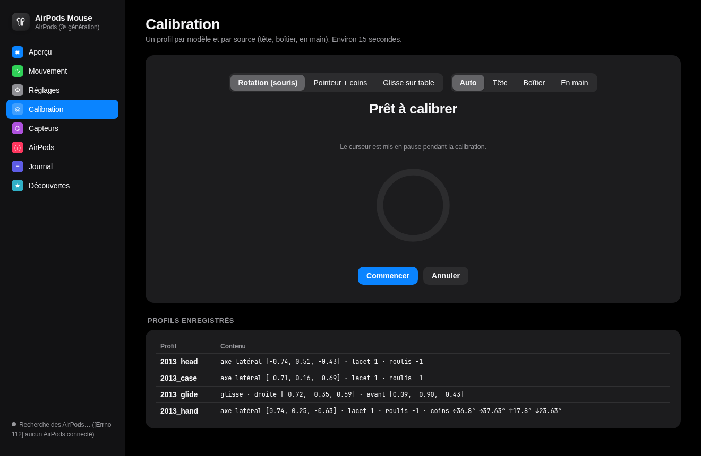

MousePods reads the motion sensors of AirPods 3 and AirPods Pro on Linux, without any Apple device, and turns your head into a pointer. Along the way, it documents for the first time how AirPods 3 expose those sensors: Apple RemoteHID.

Apple added head tracking to AirPods 3 in 2021. Open-source tools learned to read it on AirPods Pro and AirPods 4, but never on AirPods 3. Here's the state of things before this project, as of 4 November 2026:
| Project | Platform | AirPods 3 head tracking |
|---|---|---|
| LibrePods | Android, Linux | Not documented |
| librepods-rs | Linux | "Expected: battery, ear detection" only |
| pods-head-tracker | Linux | Untested (built on AirPods 4) |
| airpods-head-track | Windows | Untested (built on AirPods 4) |
| aap-head-tracker | Windows | "Experimental candidate, not tested" |
| MagicPods | Windows | No head tracking on genuine AirPods |
| MousePods | Linux | Verified on hardware, up to ~210 Hz |
Together they explain why AirPods 3 looked unsupported. Each is backed by real captures and automated tests. The full list of findings, with the open questions, is in DISCOVERIES.md.
Every published start command (SensorDataWX, services 1–31 and 79, in any order) gets no data and no acknowledgement. Their capability list lacks the "sensor data v2" entry that newer AirPods have.
On the legacy RTBuddy channel 0x800, each sensor is a virtual HID device with its own report descriptor, driven with HID Get/SetReport. Writing the "Report Interval" feature report starts the stream.
At Linux's default L2CAP receive MTU (672 bytes), the buds announce only the descriptors that fit, and none of the motion ones do. At 2582, the value iOS uses, all eight appear.
One Python process, no kernel module, no root. Gravity sets what "horizontal" means, so the result doesn't depend on how the bud is held.
This is the exact message that makes AirPods 3 stream their motion at 100 Hz, decoded byte by byte. The full specification is in REMOTEHID-PROTOCOL.md.
devmotion6), bits 7–16 = length (10), bits 17–19 = kind (3 = SetReport).00 02 00 00: "who's there?"Each is a virtual HID device announced by AirPods 3. All their report descriptors are decoded in AIRPODS3-SENSORS.md.
| ID | Name | What it is | Status |
|---|---|---|---|
| 7 | devmotion6 | Fused motion: attitude quaternion, rotation rate, user acceleration, gravity | Decoded, used |
| 4 | accel | Standard HID Sensor accelerometer, int32, 10⁻⁵ g | Decoded |
| 5 | gyro | Standard HID Sensor gyrometer, int32 | Decoded |
| 6 | cma | CoreMotion activity, 182-byte vendor report | Starts, content unknown |
| 1 | kadabra | Vendor service, three report families | Unknown |
| 2 | mando | Vendor service, 8 input reports | Unknown |
| 3 | neorelay | Vendor relay, 11 input reports | Unknown |
| 8 | iedrelay | Vendor relay, 166-byte input report | Unknown |
1,873 samples recorded from devmotion6 while turning the head left and right, looking up and down, then tilting it. This is the raw stream, decoded in your browser.
Paste an AACP frame in hex. The decoder handles RemoteHID sub-packets, DeviceConnect announcements, motion reports, SensorDataWX protobuf and the common opcodes. Everything runs locally in your browser.
A local app in the style of macOS Settings. Battery, live 3D orientation, every setting applied instantly, guided calibration, and an explorer to start and query each sensor.



You need Linux with BlueZ, AirPods paired with your PC, and write access to /dev/uinput (granted to the desktop user by uaccess on most distributions).
It can't run in a browser: Web Bluetooth only speaks BLE, and AirPods use Classic Bluetooth.
| AirPods 3 motion stream (RemoteHID), up to ~210 Hz | Verified on hardware |
| AirPods Pro 2 motion stream (SensorDataWX), 25 Hz | Verified on hardware |
| Mouse mode (head, bud in hand), app, shortcuts | Tried on hardware · 37 tests |
| Pointer mode with corner calibration | Simulation only |
| Glide mode (slide a bud on the table) | Experimental |
| Case as a mouse, buds inside | Impossible: AirPods 3 sensors are off in the case |
AirPods 3 (A2564/A2565) and AirPods Pro 2 are verified. AirPods 4 and AirPods Pro 3 use the same SensorDataWX protocol as Pro 2, which other projects have confirmed. AirPods 2, AirPods Pro 1 and AirPods Max are untested.
No. Everything runs on a plain Linux PC as a normal user. It talks to the AirPods over Bluetooth (L2CAP) and moves the cursor through a virtual input device.
Not today. The protocol itself doesn't depend on the OS. Windows needs a driver that exposes L2CAP (like MagicAAP), and macOS keeps the AirPods channel for itself.
MousePods only reads sensor streams. It doesn't touch the firmware. The app has an advanced panel that can send raw commands, and that panel is clearly marked.
I reverse-engineered it with Claude (Anthropic) as an AI pair engineer. Claude ran the probes, read the public research, disassembled a clone firmware statically, and wrote the code and the tests. I held the AirPods, made the calls and checked every result on real hardware. The journal documents the whole process, failures included.
This work is open, and it was hard to find. If it helps you, keep the credit attached.
Use it anywhere, including commercially. Redistributions and derivative works must keep the copyright and the NOTICE, and mark modified files.
The documentation, protocol write-ups and captures can be reused anywhere (articles, videos, other projects, AI datasets) with credit and a link, saying if anything was changed.
Not a legal requirement, just a request: if you use MousePods or its findings, open an issue or mention @starman-tech. I'll link to your project.
Built on public work by LibrePods, apple-wireshark, mutix, ntpods and OpenHuilian. Their work on AirPods Pro made this possible.